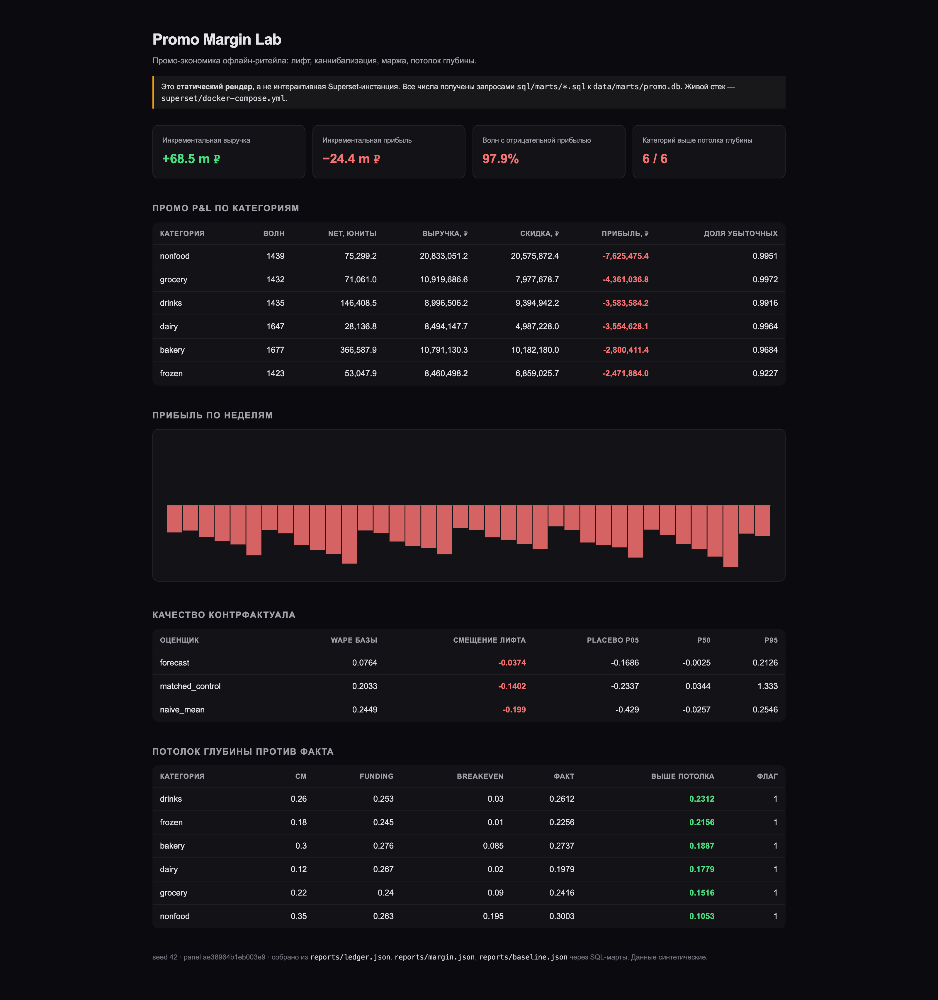

Одно измерение возвращает два знака: выручка растёт, маржинальная прибыль падает. Решение принимается по второму.
Базовая линия = среднее продаж за N недель до промо. Лифт = факт минус это среднее. Число почти всегда положительное, поэтому вопроса «делать или нет» оно не ставит.
Панель синтетическая — поэтому известен истинный лифт (968 245,7 юнитов) и каждое звено сверяется с ним, а не только само с собой.
| Оценщик | WAPE | смещение | что делает |
|---|---|---|---|
| Среднее пре-периода (naive) | 24,49% | −19,90% | уровень повторяется, тренда нет |
| Прогноз модели forecast | 7,64% | −3,74% | тренд, сезонность, история SKU |
| Подобранный контроль (matched) | 20,33% | −14,02% | похожий магазин × SKU, без промо |
База для всех трёх — одни и те же 37 016 промо-ячеек последних 16 недель, поэтому разница в числах — это разница методов, а не выборки.
Длина полосы — модуль юнитов, знак — в числе. Три корзины входят в net, network shift (кросс-форматный переток) остаётся диагностикой.
Потолок считается из ставки маржи и доли финансирования поставщиком: чем ниже собственная маржа категории, тем меньше скидка окупается. Это не «урезать промо», а «назвать цену каждой глубины».
ICC зависит от базы и окна — её нельзя называть без обоих. Здесь: 0,3572 gross base в 8-недельном окне; на net-марже за 78 недель панели — 0,2197.
Ранжирование отвечает на вопрос «что лучше», а решение — «что делать с бюджетом». Топ-20% по скору — это, в основном, глубокая скидка на низкомаржинальные ячейки; порог по знаку ожидаемой маржи отбирает 3,7% кандидатов и выходит в плюс.
| Политика | бюджет | прибыль | ячеек |
|---|---|---|---|
| Blanket 15% на все кандидаты | 4 448 117 ₽ | −851 508 ₽ | 4 756 |
| Tight · random 15% | 444 807 ₽ | +21 888 ₽ | 1 240 |
| Tight · top-15% по скору | 444 806 ₽ | +136 648 ₽ | 966 |
| Tight · optimised | 444 806 ₽ | +231 496 ₽ | 7 798 |
| Loose · optimised | 841 068 ₽ из 2 224 058 ₽ | +267 850 ₽ | 14 484 |
Тот же бюджет, потраченный на меньшую глубину в большем числе ячеек, даёт положительную прибыль: оптимизатор опускается до 1–6% там, где потолок низкий.

Статический рендер тех же SQL-мартов · reports/superset/dashboard-static.pngЖивой Superset сейчас показывает пустые слоты чартов — дефект провижининга (не передаётся поле charts, плюс legacy viz без main_dttm_col), REQ-8 в docs/prd-improvement.md. Поэтому отгруженный визуал — именно этот статический рендер тех же SQL-мартов.
Измеренный отрицательный эффект — тоже ответ. Провал — это провести промо, не измерив его.
«Не промотировать на этой глубине» — решение с ценой, а не отсутствие результата.